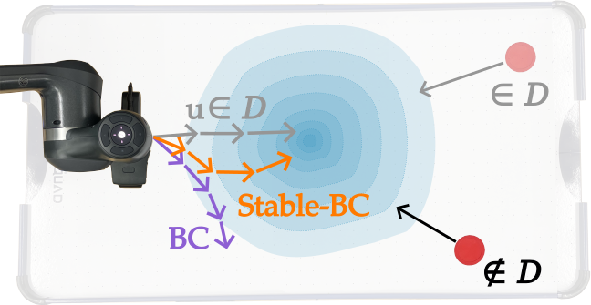

Robots can learn new tasks by imitating human examples of the desired behavior. However, these examples are fundamentally limited in the information they convey — while they specify which actions to take given what the robot sees, they do not explain why those actions are chosen. Without this knowl- edge, the robot can misinterpret the human's examples since its observations often contain extraneous details like object clutter and varying backgrounds. This creates causal confusion: for in- stance, the robot may mistakenly learn to choose actions based on irrelevant background features, failing to perform the task when the environment changes. To address this limitation, we advance how humans provide examples to teach robots. We enable users to intuitively specify task-relevant locations and objects using markers and natural language while demonstrating the task. We then propose a learning framework, CIVIL, that leverages this augmented data to filter the robot's observations and extract a feature representation that causally informs human actions. Our framework uses these features to train a transformer-based robot policy that, in practice, is able to emulate human behavior without being confused by visual distractors. Our simulations and real-world experiments demonstrate that robots trained with CIVIL learn tasks more efficiently than prior approaches for visual imitation learning. Consequently, our user study reveals that this reduces the total time required to train robots that not only mimic human actions but also their decision-making process and thus generalize to previously unseen scenarios.

Caption of the front figure here.